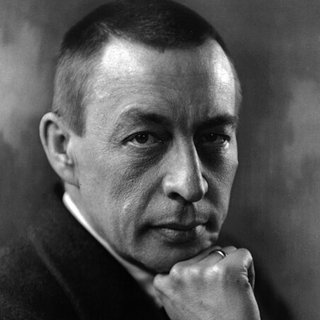

作曲家 › セルゲイ・ラフマニノフ

セルゲイ・ラフマニノフ
ロシア最後の偉大なロマン派。大きな手と忘れられない旋律をもつ伝説のピアニストです。
生涯
1873年、ロシア北西部ノヴゴロド地方の、没落した貴族の家に生まれました。サンクトペテルブルクとモスクワの音楽院で学び、モスクワ音楽院を金メダルで卒業しました。
1897年の交響曲第1番の初演の失敗で深い挫折に陥りましたが、医師ニコライ・ダーリの助けで立ち直り、1901年に彼に献呈したピアノ協奏曲第2番を発表して世界的な成功を収めました。
1917年の革命の後ロシアを離れ、二度と戻りませんでした。演奏会ピアニストとしてアメリカとスイスで暮らし、1943年にカリフォルニア州ビバリーヒルズで亡くなりました。
肖像：Kubey-Rembrandt Studios (1921)、パブリックドメイン、出典 ウィキメディア・コモンズ。

エピソード
- とても大きな手で、13度の音程まで届きました。ふつうのピアニストよりはるかに広い範囲です。
- 『前奏曲 嬰ハ短調』は1892年、19歳のときの作品です。あまりに有名になり、どの演奏会でもアンコールでせがまれました。
- 当時最高のピアニストのひとりで、自身の演奏の録音を数多く残しています。
ピアノで弾くとき
- 大きな和音は指の力ではなく、腕の重さで弾きましょう。
- 和音が手に対して広すぎるときは、下から素早くアルペジオにしてもかまいません。
- 対比を大切に。冒頭の厳かな3つの打音から、激しい中間部まで。
練習できる曲 1曲

Piano Learning で一音ずつ覚えよう
「音を待つ」モードでは、正しい鍵盤を弾くまで曲が止まります。スマホでも、自宅のピアノでも（アプリが音を聴き取ります）。片手ずつ練習、速度は10%から、楽譜はいつも目の前に。
ラ・カンパネラ、トルコ行進曲、ジングルベル、フレール・ジャックと同じく無料。ほか数百曲も一度の購入で、サブスクなし。